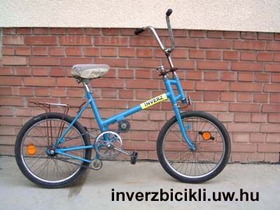
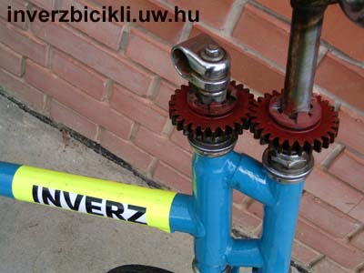
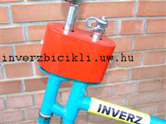
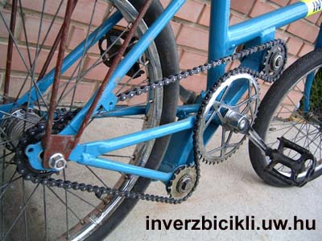

The INVERTED BIKE works on a very plain principle:
If the handlebar is turned to the left the bike turns to the right. If the pedals are driven backwards, the bike moves forward.
This movement is made through a specially modified transmission.
The fork is controlled by the transmission which makes the direction of the turning opposite.

The cogwheels are covered with a nice protective cover.

The main drive received two more chainwheels which make the inverted movement of the pedals possible. By pushing the pedals backwards the bike moves forward, and by pushing the pedals forward the coaster-brake get activated.

Initially, trying to ride this bike seems impossible as the rider tries to use the elementary riding skills. Actually, although it is close to the truth the rider can learn to ride this bike as a normal one back in the childhood and this is the greates fun of the inverted bike.